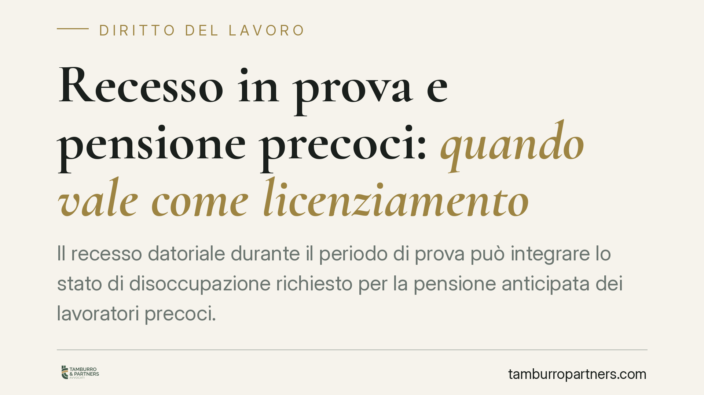

Recesso in prova e pensione precoci: quando vale come licenziamento
Il recesso datoriale durante il periodo di prova può integrare lo stato di disoccupazione richiesto per la pensione anticipata dei lavoratori precoci. Una recente pronuncia della Corte di Cassazione qualifica quel recesso come licenziamento ai fini previdenziali, valorizzando la perdita involontaria dell'occupazione. La decisione incide direttamente su chi punta all'uscita anticipata pur avendo perso il posto in prova.

Il caso
Un lavoratore aveva chiesto l'accesso alla pensione anticipata riservata ai cosiddetti "lavoratori precoci". L'INPS aveva negato il beneficio, ritenendo che il recesso subito durante il periodo di prova non rientrasse tra le ipotesi di perdita involontaria dell'occupazione richieste dalla norma. La Corte d'appello di Bologna aveva dato ragione al lavoratore. La Corte di Cassazione ha confermato quell'impostazione.
Il punto controverso era la qualificazione del recesso in prova: semplice esercizio di una facoltà contrattuale o vero e proprio licenziamento con effetti previdenziali?
Inquadramento normativo
La disciplina della pensione anticipata per i lavoratori precoci è contenuta nell'art. 1, commi 199 e seguenti, della Legge n. 232 del 2016. È "precoce" chi può far valere almeno dodici mesi di contribuzione per lavoro effettivo prima del compimento dei diciannove anni. Il beneficio è però riservato a categorie specifiche, tra cui i disoccupati che abbiano perso involontariamente il lavoro e abbiano concluso la percezione della NASpI (la Nuova Assicurazione Sociale per l'Impiego, disciplinata dal D.Lgs. n. 22 del 2015) da almeno tre mesi.
Il periodo di prova è regolato dall'art. 2096 del codice civile, che consente a ciascuna parte di recedere senza obbligo di preavviso né di motivazione. Da qui la tesi restrittiva dell'INPS: se il recesso è "libero", non sarebbe un licenziamento e non integrerebbe la perdita involontaria.
Il principio di diritto
La Cassazione ha respinto questa lettura. Ai fini previdenziali conta la sostanza dell'atto, non la sua veste contrattuale. Quando è il datore a recedere in prova, il lavoratore subisce comunque una cessazione del rapporto non voluta: la perdita dell'occupazione è involontaria a prescindere dalla libertà di forma riconosciuta dall'art. 2096 c.c.
La ratio della norma previdenziale è tutelare chi resta senza lavoro contro la propria volontà. Escludere il recesso in prova significherebbe penalizzare proprio i rapporti più fragili, tradendo la finalità della disciplina. Per questo il recesso datoriale in prova va equiparato al licenziamento nella verifica del requisito.
La distinzione che fa la differenza
È decisivo distinguere chi ha esercitato il recesso.
Se a recedere è il datore, si è di fronte a una cessazione involontaria assimilabile al licenziamento. Se invece è il lavoratore a dimettersi durante la prova, di regola non ricorre la perdita involontaria, salvo il caso delle dimissioni per giusta causa (ad esempio in presenza di gravi inadempimenti datoriali), che possono a loro volta dare accesso alle tutele riservate alla disoccupazione non voluta.
La qualificazione dell'atto di recesso, quindi, va sempre accertata sul piano fattuale.
Implicazioni pratiche
Chi ha perso il lavoro in prova e coltiva un progetto di uscita anticipata non deve considerare quel recesso un ostacolo automatico. Ferma la valutazione degli altri requisiti, il recesso datoriale in prova può concorrere a integrare lo stato di disoccupazione richiesto.
Restano comunque necessari gli ulteriori presupposti: l'anzianità contributiva prevista per i precoci, i dodici mesi di contribuzione effettiva prima dei diciannove anni, l'appartenenza a una delle categorie tutelate e — per i disoccupati — la conclusione della NASpI da almeno tre mesi.
Attenzione anche ai termini. L'azione in sede previdenziale è soggetta a decadenza: per le controversie in materia di prestazioni pensionistiche rileva il termine triennale previsto dall'art. 47 del D.P.R. n. 639 del 1970, che decorre dalla comunicazione del provvedimento dell'INPS. Un ritardo può precludere il riconoscimento del diritto.
Cosa fare in concreto
- Conserva la comunicazione di recesso e verifica chi ha esercitato il recesso: datore o lavoratore.
- Ricostruisci la posizione contributiva chiedendo l'estratto conto INPS, con particolare attenzione ai dodici mesi prima dei diciannove anni.
- Controlla lo stato della NASpI: data di inizio, durata e momento di cessazione della percezione.
- Presenta la domanda di pensione anticipata precoci nei tempi utili e conserva ricevuta e riscontri.
- Verifica il termine di decadenza triennale in caso di diniego, prima di avviare qualsiasi azione.
È opportuno far valutare la posizione previdenziale da un professionista prima della domanda, soprattutto quando la cessazione è avvenuta in prova.
Disclaimer
Contributo informativo a cura di Tamburro & Partners - Avv. Giuseppe Tamburro. Non costituisce parere legale.
Ogni storia di lavoro ha i suoi tempi.
Se gestisci HR e vuoi un confronto su contenzioso, ispezioni o licenziamenti, scrivi allo studio. Ti rispondiamo entro un giorno lavorativo.